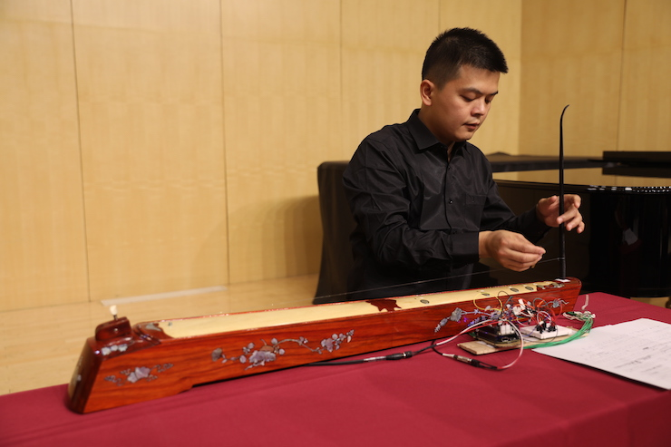
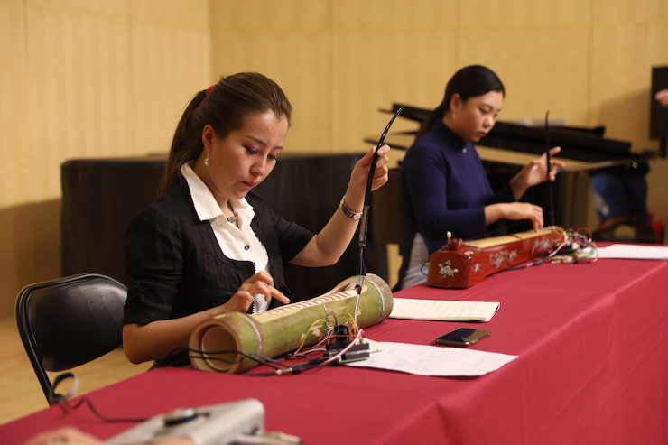

创新乐器设计—独弦琴国际工作坊：数字技术重塑传统乐器跨文化工作坊
Innovative Instrument Design - Du Xian Qin International Workshop:
Cross-cultural Workshop on Reimagining Traditional Music Instruments through Digital Technologies
Beijing, 16-20 Sep 2019
该国际工作坊的焦点为独弦琴-一种在广西南部和越南广为流行的单弦传统乐器，旨在探索利用数字音乐技术和交互设计来数字化重新创作该琴。
This international workshop focussed on the Duxianqin, a traditional a Solo String instrument popular in southern Guangxi and Vietnam, and explored the use of Digital Music Technology and Interaction Design to reimagine this one-stringed traditional instrument in a creative way.
Our paper describing the workshop: Bryan-Kinns, N., & Li, Z. (2020). ReImagining: Cross-cultural Co-Creation of a Chinese Traditional Musical Instrument with Digital Technologies. In Proceedings of NIME 2020. {PDF }
工作坊的参与者将包括来自于英国伦敦玛丽女王大学 (Queen Mary University of London) 媒体与艺术科技中心 (Media and Arts Technology) 、中央音乐学院音乐人工智能与音乐信息技术系、中国音乐学院、西安音乐学院、文旅部非物质文化遗产中心、北京大学、同济大学、中国科学院、中国地质大学（武汉）、广西艺术学院。
Participants in the workshop included Queen Mary University of London (QMUL) Media and Arts Technology (MAT) Centre, Central Conservatory of Music AI Music & Music Information technology Department，China Conservatory of Music，Xi'an Conservatory of Music，Ministry of Culture Non-material Cultural Heritage, Tongji University, Beijing University, Chinese Academy of Sciences，China Geosciences University, and more.
Reimagined Duxianqin

手指独弦琴 Digiqin

章鱼独弦琴 Octoqin
Design Diary
第一天：文化浸泡（北京“钧天坊”古琴基地)
Day 1: Reciprocal cultural immersion (Guqin base)
第二天：协同设计（中央音乐学院）
Day 2: Co-design (Central Conservatory of Music)

第三天和第四天： 数字化构思(中央音乐学院)
设计和制作
表演和音乐创作
Days 3 and 4: Digital reimagining (Central Conservatory of Music)
Design and implementation
Performance and music creation
第五天： 排练，反思，演出(中央音乐学院)
Day 5: Rehearsal, reflection, and performance (Central Conservatory of Music)

独弦琴简介
About the Duxianqin
独弦琴，顾名思义，只有一根琴弦。它以这种极为简朴的构成，通过演奏者右手的拨弦配以左手特别的音高调制方式便能演奏出动听的音乐。独弦琴主要由中国广西南部以及越南的京族人所演奏，它既可以作为独奏乐器、歌唱时的伴奏乐器，也可以在乐队中演奏。独弦琴是古老的乐器，京族人通过它表达对美好生活的向往，描绘爱情，歌颂家乡。
Duxianqin ("独弦琴", meaning “single-string instrument”) is interesting as it is a plucked string instrument with only one string and an unusual pitch modulation mechanism for the left hand. It is a traditional musical instrument played in very southern part of China (Guangxi province) and in Vietnam by Jing(京) people. The instrument can be played either as solo, singing accompaniment or in ensemble. Originating from ancient times, the music of Duxianqin usually tells wishes and hopes for better life, love stories and hymn for their hometown.
Related Materials
Duxianqin playing guide {pdf}
Slowqin research paper {pdf}
Lisa Beebe's PhD on the Vietnamese Dan Bau (Duxianqin) {pdf}
Bryan-Kinns, N., Wang, W., & Ji, T. (2018). Exploring Interactivity and Co-Creation in Rural China. Interacting with Computers. Oxford University Press. {pdf}
Wang, W., Bryan-Kinns, N., & Ji, T. (2016). Using community engagement to drive co-creation in rural China. International Journal of Design, 10(1), 37-52. {pdf}